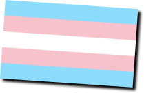
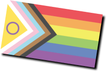

You deserve a
welcoming, loving world.
And so do the people you care about. Here you can reach out to a counselor if you’re struggling, find answers and information, and get the tools you need to help someone else.
You deserve a
welcoming, loving world.
And so do the people you care about. Here you can reach out to a counselor if you’re struggling, find answers and information, and get the tools you need to help someone else.
You are not the only one <3
HOURS:
Sunday-FridayPhone: 6 PM – 9 PM, at 1-800-268-9688
Text: 4 PM – 9:30PM, at 647-694-4275
Live chat: 4 PM-9:30 PM
(Standard text messaging rates apply)

“You deserve to be heard, respected, supported, and accepted.”
HOURS:
7 days a week9am-9pm

“Be bold, be proud, be gay.”
The Hotline is operating 24/7 When call volumes are high it may take a little longer to get connected